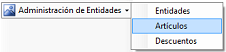
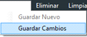

|
Altas Bajas y Modificaciones de Clientes
|
Anterior Inicio Siguiente |
1. Para crear un Cliente debemos hacer clic en el botón .(Cambiar por cliente)
2. Dentro de la nueva ventana, debemos primero seleccionar y luego hacer clic
en el botón superior  poder ingresar un nuevo cliente.
poder ingresar un nuevo cliente.
3. Los datos del cliente deben ser ingresados en los cuadros de Datos Personales y
Domicilio.
4.Una vez finalizada la carga de datos, debe presionar el botón superior Guardar ->  .
.
1. Para modificar un cliente debemos hacer clic en el botón  .
.
2. Dentro de la nueva ventana debemos seleccionar , puede ingresar
opcionalmente algún dato en los campos disponibles y luego presionar el
botón .
.
3. En la ventana emergente, se muestran los resultados de la búsqueda y puede
seleccionar el cliente haciendo clic sobre el mismo.
4. Ya autocompletados los datos del cliente podemos realizar las modificaciones
necesarias.
5.Una vez finalizada la modificación, debe dar clic en el botón superior Guardar -> (CAMBIAR POR "GUARDAR CAMBIOS").
1. Para eliminar un Cliente debemos hacer clic en el botón  CAMBIAR.
CAMBIAR.
2. Dentro de la nueva ventana, debemos buscar el cliente ingresando opcionalmente algún
dato en los campos disponibles y luego presionar el botón  .
.
3. En la ventana emergente, se muestran los resultados de la búsqueda y puede seleccionar
el cliente haciendo clic sobre el mismo.
4.Ya autocompletados los datos del cliente procedemos con la eliminación, dando clic
en el botón  ubicado en la parte superior de la ventana.
ubicado en la parte superior de la ventana.